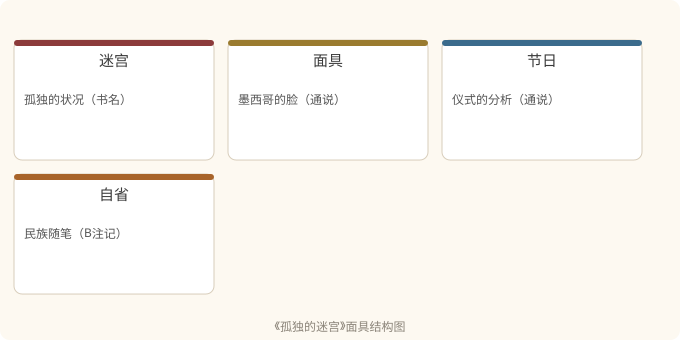

孤独的迷宫
一、基本信息
| 作者 | 帕斯 |
|---|---|
| 成书/出版 | 1950年（作者页注记：Britannica——孤独的迷宫 (1950)——文化随笔） Octavio Paz — Encyclopaedia Britannica（百科全书） |
| 国别/地区 | 墨西哥 |
| 时代 | 近代 · 20世纪50年代 |
| 体裁 | 文化随笔集 |
| 语言 | 西班牙语 |

《孤独的迷宫》面具结构图（主题·结构图）
二、创作背景
作者页注记：孤独的迷宫 (1950)——'文化随笔（Britannica）'。
Britannica：帕斯——1990诺奖（作者页交叉——待核）。
题材（通说待核）：墨西哥人的'孤独'与'面具'——从普埃布拉的少女到'chiapaneco'的节日。
三、内容脉络
（通说待核）'墨西哥人'的性格解剖：面具与孤独。
（通说待核）'亡灵节'与'独立日'的仪式分析。
四、主要人物表
| 人物 | 身份 | 说明 |
|---|---|---|
| （文化随笔无人物） | —— | 民族志随笔 |
五、主题与艺术特点
- '孤独'：墨西哥人的存在状况（书名语境——通说待核）。
- '面具'与'男人的 FORMA'（通说待核）。
- 民族自省的随笔（B注记）。
六、影响与评论
- Britannica：El laberinto de la soledad (1950)（作者页注记）。
Octavio Paz — Encyclopaedia Britannica（百科全书） - Britannica：帕斯1990诺奖（作者页交叉——待核）。
Octavio Paz — Encyclopaedia Britannica（百科全书）
七、阅读建议
难点
- 民族志的术语。
- 墨西哥节日与历史。
- 《孤独的迷宫》中译本（人民文学等——通说待核）。
- 西班牙文原版。
帕斯散文首选；与《太阳石》对读。
八、待核实
- 章节结构核对（通说）。
- 1950年出版细节待核。
- 1990诺奖交叉核对。